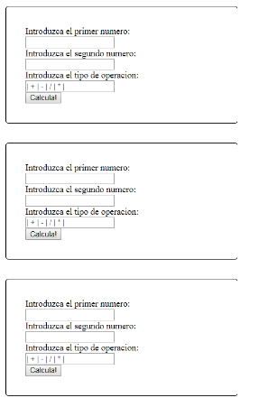

Se pregunta a l'usuari quantes calculadores vol crear mitjançant un camp tipus "input" numèric.
Una vegada introduït s'han de crear aquesta quantitat de calculadores mitjançant un botó dins d'un div amb “id” amb valor “–”. Un exemple de l'estructura de 3 calculadores:

Cada calculadora permet dur a terme l'operació de suma, resta, divisió i multiplicació de manera independent.
Material d'anàlisi:
setAttribute()